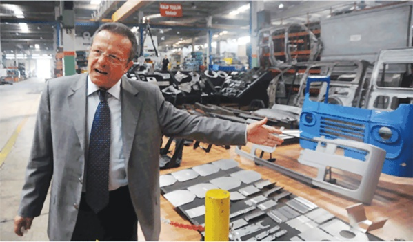
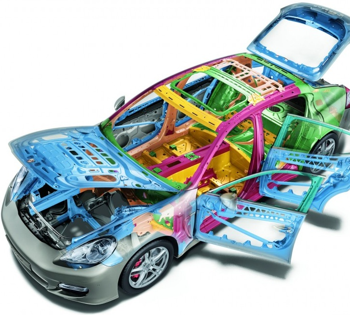
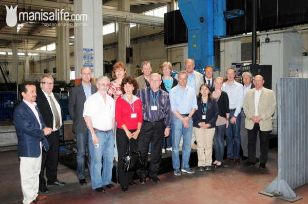
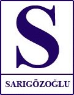

Ürettikleri kalýplar ve sac parçalarý aralarýnda Jaguar, Porsche gibi markalarýn da bulunduðu 10 markanýn fabrikalarýnda kullanýlan Sarýgözoðlu Kalýp Sanayi, BMW'nin yeni serilerinin kalýplarý için de kýsa listeye girmeyi baþardý.

Manisa Organize Sanayi Bölgesi'nde faaliyet gösteren, otomotiv ve beyaz eþya sektörü için kalýp ve sac parça üretimi yapan Sarýgözoðlu Hidrolik Makina ve Kalýp San. A.Þ., Porsche'nin birçok parçasý için kalýp üretirken, BMW'nin gelecek yýl üretmeye baþlayacaðý yeni serilerin kalýplarý için de kýsa listeye girmeyi baþardý. Þirket Baþkaný Mustafa Sarýgözoðlu, krizde 4. fabrikayý Bursa'da açarak ihracatta daha güçlü olmayý planladýklarýný belirtti.,
Sarýgözoðlu, 1957'de Ýzmir'de üretime baþlayan ailenin kalýp konusunda önemli bir deneyime sahip olduðunu, Türk otomotiv ve beyaz eþya sanayisinin geliþimine paralel, kendilerinin de geliþtiðini ifade etti. Sarýgözoðlu, grup olarak 10 yýl öncesine kadar, kalýp üretimini, sac parça üretimini desteklemek üzere kullandýklarýný ancak bu alanda özellikle otomotiv sanayisindeki talebi iyi deðerlendirerek yüksek teknoloji ve tasarýma dayalý geliþim sergilediklerini kaydetti. Mustafa Sarýgözoðlu, Türkiye'nin nitelikli iþ gücünü iyi deðerlendirerek dünyanýn önde gelen markalarýyla çalýþmaya baþladýklarýný söyledi.
10 marka için üretim yapýyoruz
Firma olarak ürettikleri kalýplar ve sac parçalarýnýn aralarýnda Jaguar, Porsche gibi markalarýn da bulunduðu 10 markanýn Avrupa'daki fabrikalarýnda kullanýldýðýný söyleyen Sarýgözoðlu, þu bilgileri verdi: "Halen Mercedes, BMW, Peugeot, Audi ve Volkswagen fabrikalarýnýn kalýplarýný üretiyoruz. Son olarak Porsche'nin 4 kapýlý modeli olan Panamera'nýn da birçok parçasýnýn kalýplarýný ürettik. Genelde Avrupa'da bulunan fabrikalara teslimat yapýyorduk ancak Audi, Çin'deki fabrikasý için de kalýp istedi. Geçen yýlýn son aylarýnda teslim ettik.
Þimdi gündemimizde Peugeot ile büyük bir proje var. Ayrýca BMW'nin 2011 yýlýnda piyasaya çýkacak yeni 3 ve 5 serisinin ihtiyacý olan kalýplarý üretmek istiyoruz. Bu konuda uluslararasý yarýþma açýldý. 15 firmadan son 5'e kaldýk. Kalýplarýnýn tasarlanmasý, üretimi ve Almanya'daki fabrikalara gönderilmesini içeren bu iþ için sürekli Almanya'ya gidiyoruz.

Porsche Panamera, kaynak; www.cubiccapacity.com/tech-tour-de-force-porsche-panamera-inside-out
Ortaklýk teklifleri alýyoruz
Kalýp üretiminin yoðun tasarým faaliyeti gerektirdiðini, bazen otomotiv firmalarý tarafýndan gönderilen prototiplere müdahale ederek düzelttirebildiklerini ifade eden Sarýgözoðlu, bu konudaki baþarýlarý nedeniyle Doðu Avrupalý firmalardan daha iyi olduklarýna dikkat çekti.
Sarýgözoðlu, Türkiye'nin ucuz deðil nitelikli iþgücü cenneti olduðunu belirterek "Fabrikamýzý sýk sýk Avrupa'daki fabrikalardan heyetler ziyaret ediyor. Dinamik, esnek ve baþarýya aç yapýmýz onlarý etkiliyor. Dýþ destek almak isteyen otomotiv firmalarýnýn da ilk tercihi her zaman Türkiye oluyor. Bu konuda lojistik avantajlarýna raðmen Doðu Avrupa ülkelerinin önüne geçebiliyoruz" diye konuþtu.
Mustafa Sarýgözoðlu, uluslararasý düzeyde birkaç firmadan ortaklýk teklifi aldýðýný ancak þu anda böyle bir giriþimde bulunmayý düþünmediðini sözlerine ekledi.
Talebe yetiþmek için 4. fabrikasýný açýyor
Dünya çapýnda daha büyük projelere katýlabilmek amacýyla yatýrýmlarýný geniþletme kararý aldýklarýný ifade eden Sarýgözoðlu, grubun 4. üretim tesisini Bursa Organize Sanayi Bölgesi'nde açacaklarýný belirtti. Bursa'yý, otomotiv sektörüne yakýn olmak için tercih ettiklerini söyleyen Sarýgözoðlu, bu tesisin devreye girmesiyle yýllýk 30 milyon euro civarýndaki cirolarýnýn kýsa sürede 60 milyon euroya çýkmasýný planladýklarýný kaydetti. 30 milyon euroya mal olan yatýrýmý önemli miktarda dýþ kaynakla yaptýklarýný söyleyen Sarýgözoðlu, "Bu nedenle kriz ortamýnda kaygýlý günler geçirdik. Krizin 2009'la sona ereceðini umuyoruz. Kriz sona erdiðinde alanýnda Avrupa'nýn en modern fabrikasýnýn üretimde olmasý bizim için büyük avantaj olacak" dedi.
Jaguar ve Porsche için üretim yapan Sarýgözoðlu Kalýp Sanayi, BMW'nin yeni serilerinin kalýplarý için kýsa listeye girdi...
Ýlgili haber: (13.05.2009)
Avrasya fuarý ile eþzamanlý olarak Bursa'da gerçekleþtirilen fuar ve toplantý kapsamýnda Türkiye gelen ISTMA Dünya kalýp üreticilerinin Amerika, Asya, Avrupa Temsilcileri (UKUB) Ulusal Kalýp Birliði'nin desteði ile Türk imalat ve kalýpçýlýk sektörünü yakýndan tanýmak ve potansiyelimizi görmek amacýyla Ege'de Sarýgözoðlu tesislerinde inceleme yaptýlar.

07-10 Mayýs tarihlerinde Bursa'da gerçekleþtirilen 41. Kalýp Avrasya Toplantýsýna katýlan Otomotiv Sektörü'nün 10 devi Manisa Organize Sanayi Bölgesi'nde faaliyet gösteren Sarýgözoðlu A.Þ.'yi ziyaret ettiler. Ziyaret sýrasýnda firma Yönetim Kurulu Baþkaný Mustafa Sarýgözoðlu ve kardeþi Levent Sarýgözoðlu'ndan bilgiler alan konuk heyet tesislerin çok modern olduðunu söylediler.
"Kaliteli Üretim ve Modern Tesisimizi Üreticilere Tanýttýk"
Avrupa'daki kalýp sektöründeki geliþmiþliðin artýk ülkemizde de saðlandýðýný söyleyen Sarýgözoðlu A.Þ. Yönetim Kurulu Baþkaný Mustafa Sarýgözoðlu "Firma olarak amacýmýz teknik kabiliyeti ve teknolojisi ile Avrupa'daki firmalarla yarýþan Türk Kalýpçýlýný Avrupa'da cazibe merkezi haline getirmek. Bursa'da düzenlenen Fuar kapsamýnda ülkemize gelen konuk ülkelerin firma yetkililerini tedarik konusunda hangi noktaya geldiðimiz konusunda tanýtým yapmaktýr. Dünya devi olan Volkswagen, BMW, Jaguar, FIAT, Mercedes-Daimler, AUDI, Peugeot ve Renault gibi firmalara bu gezi ile kendimizi tanýtmayý amaçladýk. Ýzlenimlerimizden bunu baþardýðýmýzý anlýyoruz." dedi.
Sarýgözoðlu Bursa'da Yeni Fabrika Açýyor
Ýzmir'de bulunan tesislerin tamamýnýn Manisa Organize Sanayi Bölgesi'nde toplandýðýný söylenen Sarýgözoðlu "Manisa'daki tesislerimize ilaveten Bursa'da 30 bin m2 kapalý alanda bir fabrika inþa ediyoruz. Burada G1 Robot Otomasyonlu Tandem Pres hattýnýn yaný sýra G2 Robot Otomasyonlu Tandem Pres Hatlarý ve transfer pres hattý olacak." dedi.
Sarýgözoðlu, ayný fabrikanýn kalýphane bölümünde CNC freze, alýþtýrma ve deneme pres hattý, 5 eksen lazer ve CMM ölçüm cihazlarý Bursa presli sac fabrikasý bünyesinde faaliyete geçeceðini de açýklandý.
"Ünlü firmalara kalýp üretiyoruz"
Dünya'da her sýnýftan araçta ürettikleri kalýplarýn olduðunu söyleyen Sarýgözoðlu "Çin'de üretilecek olan AUDI'nin B8'i için hazýrlanan tünel ve taban parçalarý bu ülkeye sevk edildi. Önümüzdeki ay ise firmamýzýn çalýþanlarý burada parçalarý çalýþýr þekilde teslimatýný yapacaktýr. Ayrýca Volkswagen'in ABD'de üreteceði Porsche'nin Panemara modelinin kalýplarý da ABD'ye yollanmýþtýr." dedi.
Sarýgözoðlu Hidrolik Makine ve Kalýp Sanayi hakkýnda: (www.sarigozoglu.com.tr)
SARIGÖZOÐLU, 1957 yýlýnda Ýsmail SARIGÖZOÐLU tarafýndan Nurçelik adý ile Ýzmir'de kurulmuþ ve dünya devleriyle çalýþacak tecrübe, bilgi ve teknolojik güce ulaþmýþtýr.
Günümüzde SARIGÖZOÐLU çok deðiþik sektörlere yönelik üretim yapmakla birlikte, kalýpçýlýk geleneðinden kaynaklanan motivasyon ile KALIP konusunu en öncelikli sektör olarak kabul etmektedir. Uzun yýllara dayanan deneyim ve birikimin güncel teknik ve teknolojilerle buluþturulmasýna özen göstermek bir iþletme felsefesidir.
Ýyi eðitilmiþ insan gücüne ve ileri teknolojiye sürekli yatýrým yapan firmamýz, ürün tasarýmý, kalýp tasarýmý ve kalýp üretimi iþlevlerini bilgisayar destekli yapmanýn saðladýðý kalite ve esneklik sayesinde, sektöründe sürekli artan bir ivme ile hizmet vermenin gururunu taþýmaktadýr.
Kaynaklar:
|